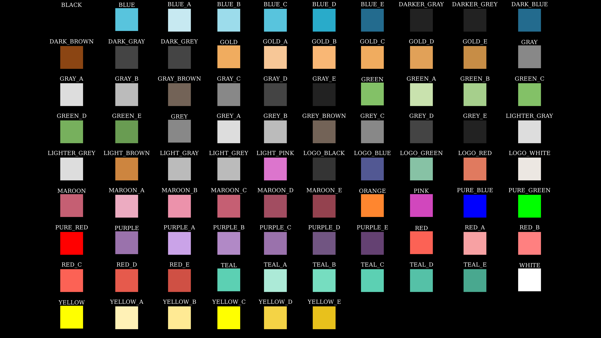

Manim学习笔记
Table of Contents
警告！这只是一篇笔记！一篇笔记！非入门教程！默认具有一定python基础
系统环境：Arch Linux
时间：2023-08-23
顺带一提：使用manimCE的建议看最后Reference里面最后一个链接里的官方教程
1. Manim的安装
5202年了，manim的安装仍旧让人非常想吐槽。arch或许还好还有aur，但是aur上的包都是 使用github的链接，下载奇慢，还可能时不时出现一些编译问题。下面开始正文（注：仅适 用于archlinux）
安装manimce大致有两种方案，一是使用pipx在虚拟环境安装（仅限单用户），二是使用
makepkg + python-build + python-installer 将manim打包后安装（系统级）
1.1. 使用pipx的方案
# 确保系统完整且具有gcc等工具，texlive选装 sudo pacman -S base base-devel ffmpeg texlive # python环境设置 sudo pacman -S python python-pip python-pipx # 设置镜像 pip config set global.index-url "https://pypi.tuna.tsinghua.edu.cn/simple" # 安装ManimCE(manimgl是3b1b个人版本) pipx install manim
1.2. 使用 makepkg 的方案
# 最好在运行前设置pip镜像 pip config set global.index-url "https://pypi.tuna.tsinghua.edu.cn/simple"
请确保/etc/pacman.conf中启用了archlinuxcn库，如若没有在其中添加以下内容以设置
[archlinuxcn] Server = https://mirrors.tuna.tsinghua.edu.cn/archlinuxcn/$arch
剩下的我比较懒直接丢PKGBUILD文件得了
# Maintainer: Chglish pkgname=python-manimce pkgver=0.19.0 pkgrel=1 pkgdesc="Animation engine for explanatory math videos (community edition)." arch=('any') url="https://github.com/ManimCommunity/manim" license=("MIT" "custom") groups=('local-built') depends=( "ffmpeg" "python" "python-pillow" "python-pygments" "python-beautifulsoup4" "python-click" "python-decorator" "python-networkx" "python-numpy" "python-cairo" "python-rich" "python-scipy" "python-tqdm" "python-typing_extensions" "python-watchdog" "python-srt" "python-decorator" "python-colour" "python-google-api-core" "python-importlib-metadata" "python-requests" "python-setuptools" # archlinuxcn "python-audioop-lts" "python-av" "python-click-default-group" "python-pydub" "python-skia-pathops" ) makedepends=( "base-devel" "python-pip" "python-build" "python-installer" "python-setuptools" "python-wheel" ) optdepends=( "texlive-core: LaTeX support" ) provides=( manim python-cloup python-isosurfaces python-manimpango python-mapbox-earcut python-moderngl python-glcontext python-moderngl-window python-screeninfo python-svgelements ) build() { pip download --no-deps -i https://pypi.tuna.tsinghua.edu.cn/simple ${provides[*]#python-} if [[ ! -d output ]]; then mkdir output fi find ./ -maxdepth 1 -type f -name "*.tar.gz" -exec tar xzf \{\} -C output \; for dir in output/* ;do python -m build -w -o . $dir done if [[ ! -d root ]]; then mkdir root fi find ./ -maxdepth 1 -type f -name "*.whl" -exec python -m installer --destdir="root" \{\} \; } package() { mv root/* $pkgdir }
把上面的代码拷下来命名为 PKGBUILD 存到某个目录，然后运行 makepkg -s 就可以了
(不会到了这步还不会吧？罚你去看archwiki)
btw上面的包不是标准包，因为它打包了很多个python库，没有独立的版本管理，并且以上 所有版本都是不确定的，还请小心谨慎使用。但如果以上都不是追求的目标的话还是挺对懒 癌友好的（至少也对国内友好）
2. Manim基础知识
2.1. 基本格式与渲染参数
一个基本manim程序范例：
from manim import * class example_class(Scene): def construct(self): pass
然后在命令行执行以下格式的命令渲染：
manim -ql path/to/file.py example_class # 即:manim [参数] 文件.py [<你定义的类名>(类名可以省略(单个默认，多个询问))]
-q?用于指定输出质量，对应如下:
| 参数 | 输出规格 | 含义 |
|---|---|---|
| -ql | 854x480 15fps | low(480p) |
| -qm | 1280x730 30fps | medium(720p) |
| -qh | 1920x1080 60fps | high(1080p) |
| -qp | 2560x1440 60fps | 2k |
| -qk | 3840x2160 60fps | 4k |
-p在渲染完成后预览结果
2.2. 词义理解
- 空间方位 由
[x,y,z]三位数组构成，一般略去问题不大。坐标可由方向常量（看下 表）、已存在的对象以及三位数组提供（在函数间传递参数的时候）。一般而言省略掉z 坐标问题不大。- x轴横于画面，y轴纵于画面，z轴垂直于画面。
IN代表垂直并向着屏幕方向，OUT则相反
- 对象 一般指manim定义的那堆大写开头的可被添加到屏幕的类
- 方法 一般指对象（类）的内部的函数，在manim中方法一般默认返回self，也就是说实际
上可以在执行完一个方法后套上另外一个方法，如
a.b().c().e()这样 - 通用方法命名规律 用于找出想要的方法
get_XXX获取对象的属性set_XXX设置对象的属性
- 属性 对象的属性（如颜色字体大小位置等）
常见英语词汇翻译
原词 意思 buff 缓冲，抵达预设位置前预留的空间 opacity 透明度 about_point 旋转等操作的中心点 vertices 顶点 axis 轴
3. Manim手册
3.1. 常量速查
方位：本质为一个三维坐标（数组）
UL UP UR | OUT 屏幕外面 LEFT ORIGION RIGHT | (z轴) ---------- DL DOWN DR | IN 屏幕内侧
组合方式： 使用
+号相加- 角度
DEGREES角度制(PI/180) |PI弧度制 |TAU周角(2*PI) 颜色
BLACK BLUE GOLD GRAY GREEN GREY ORANGE PINK PURPLE RED WHITE YELLOW

Figure 1: manim中各种颜色
生成上图的代码
#!/usr/bin/env manim -pqh -s from manim import * class Color(Scene): def construct(self): # plane = NumberPlane() # self.add(plane) colors = dir(color.manim_colors)[:-11] colors.remove("ManimColor") boxs = VGroup() for i in colors: group = VGroup() col = color.manim_colors.__dict__[i] box = Rectangle(width=0.5, height=0.5, color=col, fill_opacity=1) text = Text(i).scale(0.2).next_to(box, UP*0.2) group.add(box, text) boxs.add(group) boxs.arrange_in_grid(buff=0.2) self.add(boxs)
3.2. 对象及其特异性方法一览
内容来自ManimCE手册，英语好的直接看定义知参数
"""注：`#`注释部分的括号内为其父对象""" # 组(VMobject) class VGroup(*vmobjects, **kwargs) """可以通过VGroup(xxx, xxx, ...)、VGroup.add(xxx)、VGroup()+=XXX等方式添加对象 可以通过VGroup()[num]对某个顺序位置的对象进行访问 其内部的对象实际上是种指针，组内组外都能访问控制""" # 线(TipableVMobject) class Line(start=array([-1., 0., 0.]), end=array([1., 0., 0.]), buff=0, path_arc=None, **kwargs) # 虚线(Line) class DashLine(*args, dash_length=0.05, dashed_ratio=0.5, **kwargs) # 两条线夹角的标记弧线(VMobjects) class Angle(line1, line2, radius=None, quadrant=(1, 1), other_angle=False, dot=False, dot_radius=None, dot_distance=0.55, dot_color=ManimColor('#FFFFFF'), elbow=False, **kwargs) # 矩形(RegularPolygon) class Rectangle(color=ManimColor('#FFFFFF'), height=2.0, width=4.0, grid_xstep=None, grid_ystep=None, mark_paths_closed=True, close_new_points=True, **kwargs) # 正三角形(RegularPolygon) class Triangle(**kwargs) # 开放型多边形(VMobject) class Polygram(*vertex_groups, color=ManimColor('#58C4DD'), **kwargs) # 闭合型多边形(特殊的Polygram) class Polygon(*vertices, **kwargs) # 圆形(Arc) class Circle(radius=None, color=ManimColor('#FC6255'), **kwargs): # 让圆的圆心对齐已有元素 def surround(mobject, dim_to_match=0, stretch=False, buffer_factor=1.2) # 椭圆(Circle) class Ellipse(width=2, height=1, **kwargs) # 点(Circle) class Dot(point=array([0., 0., 0.]), radius=0.08, stroke_width=0, fill_opacity=1.0, color=ManimColor('#FFFFFF'), **kwargs) # 箭头(Line) class Arrow(*args, stroke_width=6, buff=0.25, max_tip_length_to_length_ratio=0.25, max_stroke_width_to_length_ratio=5, **kwargs) """如果不设置buff=0就会造成箭头的始末位置有偏差的问题""" # 曲箭头(ArcBetweenPoints) class CurvedArrow(start_point, end_point, **kwargs) # 坐标轴(VGroup, CoordinateSystem) class Axes(x_range=None, y_range=None, x_length=12, y_length=6, axis_config=None, x_axis_config=None, y_axis_config=None, tips=True, **kwargs): # 坐标轴绘图，返回的是一个对象，与Axes对象无直接联系 def plot(function, x_range=None, use_vectorized=False, colorscale=None, colorscale_axis=1, **kwargs) # Returns a `Polygon` representing the area under the graph passed. def get_area(graph, x_range=None, color=(ManimColor('#58C4DD'), ManimColor('#83C167')), opacity=0.3, bounded_graph=None, **kwargs) # 网格，可用于定位、查看画布大小等(Axes) class NumberPlane(x_range=(-7.111111111111111, 7.111111111111111, 1), y_range=(-4.0, 4.0, 1), x_length=None, y_length=None, background_line_style=None, faded_line_style=None, faded_line_ratio=1, make_smooth_after_applying_functions=True, **kwargs) # 文本(SVGMobject) class Text(text, fill_opacity=1.0, stroke_width=0, *, color=ManimColor('#FFFFFF'), font_size=48, line_spacing=-1, font='', slant='NORMAL', weight='NORMAL', t2c=None, t2f=None, t2g=None, t2s=None, t2w=None, gradient=None, tab_width=4, warn_missing_font=True, height=None, width=None, should_center=True, disable_ligatures=False, use_svg_cache=False, **kwargs) # 数学公式(SingleStringMathTex) class MathTex(*tex_strings, arg_separator=' ', substrings_to_isolate=None, tex_to_color_map=None, tex_environment='align*', **kwargs) # latex渲染文本(Mathtex) class Tex(*tex_strings, arg_separator='', tex_environment='center', **kwargs) """由于文字使用Latex渲染，渲染中文时可能会报错，所以要在后面加上参数变成 Tex("Strings", ..., tex_template=TexTemplateLibrary.ctex) 以渲染中文""" # 文字加分割线组成的标题(Tex) class Title(*text_parts, include_underline=True, match_underline_width_to_text=False, underline_buff=0.25, **kwargs) # 图片(AbstractImageMobject) class ImageMobject(filename_or_array, scale_to_resolution=1080, invert=False, image_mode='RGBA', **kwargs)
稍微没有那么常见的对象
# 矢量化的对象，是一堆对象的父对象，大多数对象的通用属性来源(Mobject) class VMobject(\ fill_color=None, fill_opacity=0.0, \ stroke_color=None, stroke_opacity=1.0, stroke_width=4, \ background_stroke_color=ManimColor('#000000'), \ background_stroke_opacity=1.0, \ background_stroke_width=0, \ sheen_factor=0.0, \ joint_type=None, \ sheen_direction=array([-1., 1., 0.]), \ close_new_points=False, \ pre_function_handle_to_anchor_scale_factor=0.01, \ make_smooth_after_applying_functions=False, \ background_image=None, \ shade_in_3d=False, \ tolerance_for_point_equality=1e-06, \ n_points_per_cubic_curve=4, \ cap_style=CapStyleType.AUTO, \ **kwargs) # 可以显示在屏幕上对象的基类 class Mobject(color=ManimColor('#FFFFFF'), name=None, dim=3, target=None, z_index=0)
3.3. 广泛通用属性一览
- 颜色家族(color)：
colorfill_colorstroke_color- 颜色属性可以直接修改设置没有问题
- 透明度家族(opacity)
stroke_opacityfill_opacity- 透明度不能够通过设置属性更改，需要使用
set_opacity更改，若需要分别修改则 需要使用set_fill和set_stroke方法在参数里指定
- 透明度不能够通过设置属性更改，需要使用
- 大小家族：
heightwidthradiusfont_size- 前两个直接修改属性比例不变，半径修改无用，字体大小可用
3.4. 广泛通用方法一览
# Add mobjects as submobjects. def add(*mobjects) # 复制自身，包括所有子对象 def copy() # ================================================== """`set`开头的方法用于设置属性""" # 设置指定的属性 def set(**kwargs) # 设置位置 def set_x(x, direction=array([0., 0., 0.])) def set_y(y, direction=array([0., 0., 0.])) def set_z(z, direction=array([0., 0., 0.])) # 设置z轴同层显示优先级 def set_z_index(z_index_value, family=True) # 设置对象颜色（边框和填充） def set_color(color, ...) # ====以上set*可在Mobject类中找到==== # 设置填充 def set_fill(color=None, opacity=None, family=True) # 设置对象边框颜色 def set_stroke(color=None, width=None, opacity=None, background=False, family=True) # ================================================== """`get`开头的方法用于获取属性""" # 获取对象碰撞箱（将对象完整包裹的正方形）底部坐标 def get_bottom() # 获取对象碰撞箱顶部坐标 def get_top() # 获取对象碰撞箱左边坐标 def get_left() # 获取对象碰撞箱右边坐标 def get_right() # 获取对象碰撞箱中心坐标 def get_center() def get_x(direction=array([0., 0., 0.])) def get_y(direction=array([0., 0., 0.])) def get_z(direction=array([0., 0., 0.])) # 获取颜色 def get_color() # Returns the point, where the stroke that surrounds the Mobject starts def get_start() # Returns the point, where the stroke that surrounds the Mobject ends. def get_end() # Get corner Point3Ds for certain direction. def get_corner(direction) # ================================================== """`has`开头的方法用于检查属性""" def has_points() def has_no_points() # ================================================== # 移动与形态变化 """这里有相当多的方法可以使用 =object.animate.XXX= 的形式动画化 （需要传到play()里）不过这种方法得到的结果往往是对前后结果的插帧补全， 并非是“有特定运动路径的动画”。例如说这样使用的rotate就不是旋转动画 所以说这样的效果更像ApplyMethod()""" # 缩放 def scale(scale_factor, scale_stroke=False, **kwargs) # 旋转 def rotate(angle, axis=array([0., 0., 1.]), about_point=None, **kwargs) """使用`about_point`可以实现绕点旋转 使用`axis`可以指定旋转轴（向量形式），选择形式遵从右手螺旋定则 右手拇指为转轴方向，弯曲四指其方向为旋转正方向（所以默认方向才是`OUT`）""" # 以绝对位置移动（以坐标轴中心定位） def move_to(point_or_mobject, aligned_edge=array([0., 0., 0.]), coor_mask=array([1, 1, 1])) # 以相对位置移动（以对象当前位置定位），参数同上 def shift(*vectors) # 以已有对象位置定位 +（上面的好像也可以）+ def next_to(mobject_or_point, direction=array([1., 0., 0.]), buff=0.25, aligned_edge=array([0., 0., 0.]), submobject_to_align=None, index_of_submobject_to_align=None, coor_mask=array([1, 1, 1])) # 在指定方向上对齐某个已知对象 def align_to(mobject_or_point, direction=array([0., 0., 0.])) # 移动到屏幕角落 def to_corner(corner=array([-1., -1., 0.]), buff=0.5) # 贴着屏幕边缘 def to_edge(edge=array([-1., 0., 0.]), buff=0.5) # 移动至屏幕中央 def center() # 可以将组内对象呈一条线型排列 def arrange(direction=array([1., 0., 0.]), buff=0.25, center=True, **kwargs) # 可以将组内对象呈网格型排列 def arrange_in_grid(rows=None, cols=None, buff=0.25, cell_alignment=array([0., 0., 0.]), row_alignments=None, col_alignments=None, row_heights=None, col_widths=None, flow_order='rd', **kwargs)
3.5. 屏幕方法一览
class Scene(renderer=None, camera_class=<class 'manim.camera.camera.Camera'>, always_update_mobjects=False, random_seed=None, skip_animations=False): # 添加对象 def add(*mobjects) # 移除对象 def remove(*mobjects) # 清除屏幕 def clear() # 替换（可将子物体偷梁换柱） def replace(old_mobject, new_mobject) # 暂停，画面静止保持等待 def wait(duration=1.0, stop_condition=None, frozen_frame=None) # wait()的别名 def pause(duration=1.0) # 播放动画 def play(*args, subcaption=None, subcaption_duration=None, subcaption_offset=0, **kwargs)
3.6. 动画方法一览
# 动画(object) class Animation(mobject=None, lag_ratio=..., run_time=..., rate_func=smooth, ..., **kwargs) """ lag_ratio :动画逐步应用到子对象的延迟，为0表示动画同步进行 run_time :动画总时间 rate_func :动画速度曲线""" # 添加对象，效果同Scene.add()，但用于和其他动画并列(Animation) class Add(mobject=None, **kwargs) # 暂停(Animation) class Wait(runtime=1, stop_condition=None, frozen_frame=None, rate_func=linear, **kwargs) # 将对象所有数据转换成目标对象数据(Animation) class Transform(mobject=None, target_mobject=None, path_func=None, path_arc=OUT, path_arc_centers=None, replace_mobject_with_target_in_scene=False, **kwargs) # 将对象偷梁换柱(Transform) class ReplacementTransform(mobject, target_mobject) # 用插帧将指定的非动画方法动画化(Transform) class ApplyMethod(method, *args) # 旋转动画(Transform) class Rotate(mobject, angle=PI, axis=OUT, about_point=None, about_edge=None, **kwargs) """--mobject 旋转对象 --angle 旋转角度 --axis 转轴 --about_point 旋转点 --about_edge 若无指定旋转点，则使用指定方向的碰撞箱边界作转点 """ # 转一圈(Animation) class Rotating(mobject, axis=OUT, radians=TAU, about_point=None, about_edge=None, run_time=5, rate_func=linear, **kwargs) # =========淡入淡出式========= # 淡入(_Fade) class FadeIn(mobject) # 淡出(_Fade) class FadeOut(mobject) # =========创造式========= # 增量显示对象(ShowPatial) class Create(mobject, lag_ratio, introducer=True) # Create的逆过程(Create) class Uncreate(mobject, reverse_rate_functio=True, remover=True) # 模拟手绘对象(DrawBorderThenFill) class Write(vmobject, rate_func=linear, reverse=False) """与Creat区别于是先绘制边框再上色 reverse: 是否从右到左书写""" # Write的逆过程(Write) class Unwrite(vmobject, rate_func=linear, reverse=True) # =========放大生长式========= # 通过从一个点开始生长来引入一个对象(Transform) class GrowFromPoint(mobject, point, point_color=None, **kwargs) """point_color:长大前的颜色""" # 从中心放大进入一个对象(GrowFromPoint) class GrowFromCenter(mobject, point_color=None, **kwargs) # 从边缘放大进入一个对象(GrowFromPoint) class GrowFromEdge(mobject, edge, point_color=None, **kwargs) # 从边缘放大进入一个箭头(GrowFromPoint) class GrowFromPoint(arrow, point_color=None, **kwargs) # 从0放大并伴有完美的黄金螺旋一个对象(GrowFromCenter) class SpinInFromNothing(mobject, angle=PI/2, point_color=None, **kwargs) # =========强调========= # 圈一圈(Succession) class Circumscribe(mobject, shape=Rectangle, fade_in=False, fade_out=False, time_width=0.3, buff=SMALL_BUFF, color=YELLOW, run_time=1, stroke_width=DEFAULT_STROKE_WIDTH) """shape: [Rectangle|Circle]二选一""" # 浪一浪(Homotopy) class ApplyWave(mobject, direction=UP, amplitude=0.2, wave_func=smmooth, time_width=1, ripples=1, run_time=2) # 摇一摇(Animation) class Wiggle(mobject, scale_value=1.1, rotation_angle=0.001*TAU, n_wiggles=0, scale_about_point=None, rotation_about_point=None, run_time=2) # 闪一闪(Succession) class Blink(mobject, time_on=0.5, time_off=0.5, blinks=1, hide_at_end=False) # 每帧只显示对象的一小部分（结合copy实现强调）(ShowPatial) class ShowPassingFlash(mobject, time_width=0.1) # 放烟花/发光(AnimationGroup) class Flash(point, line_length=0.2, num_lines=12, flash_radius=0.1, line_stroke_width=3, color=YELLOW, time_width=1, run_time=1) # 变色放大后再恢复(Transform) class Indicate(mobject, scale_factor=1.2, color=YELLOW, rate_func=there_and_back) # 亮度遮罩(Transform) class FocusOn(focus_point, opacity=0.2, color=GREY, run_time=2)
3.7. 示例
我的抄的实例
#!/bin/python from manim import * class SquareToCircle(Scene): def construct(self): circle = Circle() circle.set_fill(PINK, opacity=0.5) square = Square() square.set_fill(BLUE, opacity=0.5) square.flip(RIGHT) square.rotate(-3 * TAU / 8) self.play(Create(square)) self.play(Transform(square, circle)) self.play(FadeOut(square)) class mkCircle(Scene): def construct(self): circle = Circle() circle.set_fill(PINK, opacity=0.5) square = Square() square.set_fill(BLUE, opacity=0.5) square.next_to(circle, RIGHT, buff=0.5) self.play(Create(square), Create(circle)) class AnimatedSquareToCircle(Scene): def construct(self): circle = Circle() # create a circle square = Square() # create a square self.play(Create(square)) # show the square on screen self.play(square.animate.rotate(PI / 4)) # rotate the square self.play( ReplacementTransform(square, circle) ) # transform the square into a circle self.play( circle.animate.set_fill(PINK, opacity=0.5) ) # color the circle on screen class OpeningManim(Scene): def construct(self): title = Tex(r"This is some \LaTeX") basel = MathTex(r"\sum_{n=1}^\infty \frac{1}{n^2} = \frac{\pi^2}{6}") VGroup(title, basel).arrange(DOWN) self.play( Write(title), FadeIn(basel, shift=DOWN), ) self.wait() transform_title = Tex("That was a transform") transform_title.to_corner(UP + LEFT) self.play( Transform(title, transform_title), LaggedStart(*(FadeOut(obj, shift=DOWN) for obj in basel)), ) self.wait() grid = NumberPlane() grid_title = Tex("This is a grid", font_size=72) grid_title.move_to(transform_title) self.add(grid, grid_title) # Make sure title is on top of grid self.play( FadeOut(title), FadeIn(grid_title, shift=UP), Create(grid, run_time=3, lag_ratio=0.1), ) self.wait() grid_transform_title = Tex( r"That was a non-linear function \\ applied to the grid", ) grid_transform_title.move_to(grid_title, UL) grid.prepare_for_nonlinear_transform() self.play( grid.animate.apply_function( lambda p: p + np.array( [ np.sin(p[1]), np.sin(p[0]), 0, ], ), ), run_time=3, ) self.wait() class test(Scene): def construct(self): text = Tex(r"TEXT") self.play(Create(text)) self.wait() class test2(Scene): def construct(self): text = Tex(r"中文渲染测试", tex_template=TexTemplateLibrary.ctex) text2 = Tex(r"这是第二段测试文字", tex_template=TexTemplateLibrary.ctex) text2.move_to(DOWN) self.play(Create(text)) self.play(FadeIn(text2, shift=UP)) self.wait() class DifferentRotations(Scene): def construct(self): left_square = Square(color=BLUE, fill_opacity=0.7).shift(2 * LEFT) right_square = Square(color=GREEN, fill_opacity=0.7).shift(2 * RIGHT) self.play( left_square.animate.rotate(PI), Rotate(right_square, angle=PI), run_time=2 ) self.wait() class Shapes(Scene): def construct(self): circle = Circle() square = Square() triangle = Triangle() circle.shift(LEFT) square.shift(UP) triangle.shift(RIGHT) self.add(circle, square, triangle) self.wait(1) class MoreShapes(Scene): # A few more simple shapes # 2.7 version runs in 3.7 without any changes # Note: I fixed my 'play command not found' issue by installing sox def construct(self): circle = Circle(color=PURPLE_A) square = Square(fill_color=GOLD_B, fill_opacity=1, color=GOLD_A) square.move_to(UP+LEFT) circle.surround(square) rectangle = Rectangle(height=2, width=3) ellipse = Ellipse(width=3, height=1, color=RED) ellipse.shift(2*DOWN+2*RIGHT) pointer = CurvedArrow(2*RIGHT,5*RIGHT,color=MAROON_C) arrow = Arrow(LEFT,UP) arrow.next_to(circle,DOWN+LEFT) rectangle.next_to(arrow,DOWN+LEFT) ring = Annulus(inner_radius=.5, outer_radius=1, color=BLUE) ring.next_to(ellipse, RIGHT) self.add(pointer) self.play(FadeIn(square)) self.play(Rotating(square),FadeIn(circle)) self.play(GrowArrow(arrow)) self.play(GrowFromCenter(rectangle), GrowFromCenter(ellipse), GrowFromCenter(ring))
4. Reference
- ManimGL版本的教程与文档（有部分与ManimCE不兼容）
- ManimCE的教程文档
Footnotes:
1
该中文文档由英文翻译过来，谨慎查看